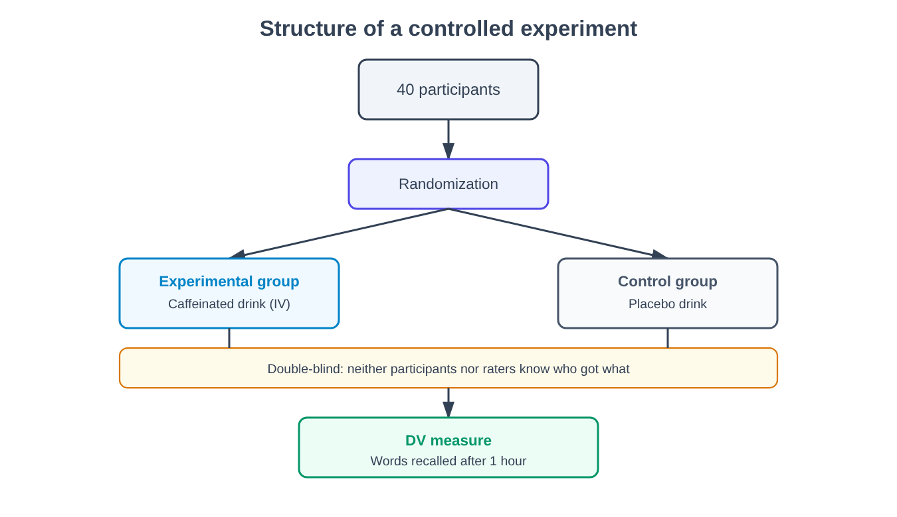
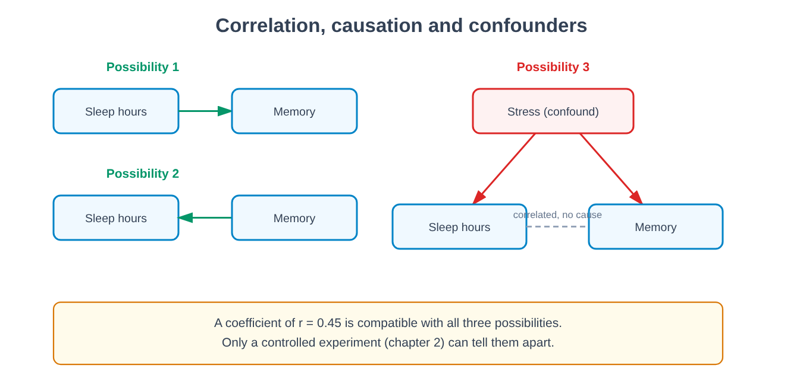
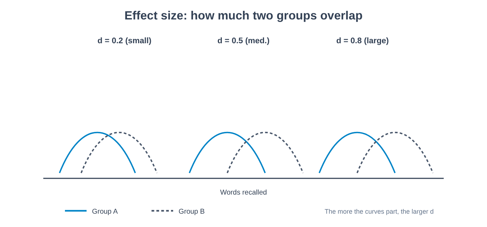
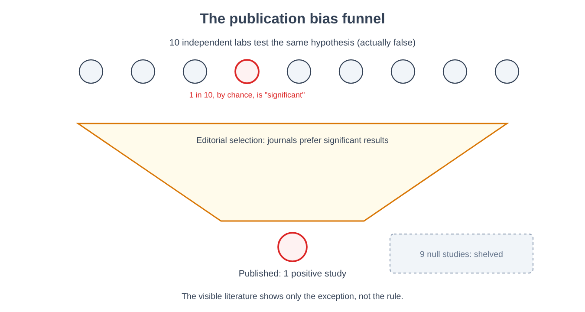

Part I. The problem of knowing the mind
Chapter 1 — Why the mind is a difficult object
[IN A NUTSHELL]
The mind cannot be observed directly the way a chemical reaction can: of other people's minds we see only the external effects, and our own we know through a report — introspection — which this chapter shows to be less reliable than it seems. This is the origin of the problem the entire book tries to tackle: how do you do science on an object that no instrument can photograph?
Try to answer a seemingly simple question: why, of two identical sweaters displayed in a shop window, did you choose the one on the right rather than the one on the left? A reason probably comes to mind at once — the color seemed more intense, the texture softer to the touch. The problem is that, if the two sweaters really were identical, that reason cannot be the real one. And the interesting point is not that you got it wrong: it is that you did not feel you were guessing. The explanation seemed as certain to you as seeing the color of the sweater itself.
This chapter starts here because this is the first obstacle that anyone who wants to study the mind scientifically must face: the object of study is not available to direct observation, neither for those who study it from the outside nor, as we will see, for those who live it from the inside.
An object seen only by reflection
When a chemist wants to know whether a reaction produces heat, she dips a thermometer into the solution. The instrument and the object measured are two distinct things, and the number that appears on the thermometer does not depend on what the chemist believes or wishes. With the mind, this clean separation is missing on both sides.
From the outside, we cannot observe another person's fear, decision, or memory: we can observe only a behavior — a facial expression, a sentence spoken, a reaction time — and from there infer what is happening "inside." This step from the observable to the inferred is called in philosophy the problem of other minds: the fact that our only access to other people's mental states is indirect, mediated by signals that could, in principle, deceive (a person may pretend to be sad, or fail to express how sad they really are).
From the inside the situation is no better, only different. Each of us has what seems to be privileged access to our own mental states — nobody has to infer whether they have a headache; they know it. This access is called introspection: a person's direct observation of their own mental contents and processes. The problem with introspection is not that it is inaccessible, but that its product — the report we give of it — is not guaranteed to correspond to the actual process that generated it. This is exactly what an experiment that has become a classic of social psychology shows (Nisbett and Wilson, 1977).
[THE EXPERIMENTAL DESIGN]
What they wanted to find out. Whether people, when they explain why they made a choice, actually report the process that caused that choice, or construct a plausible explanation after the fact.
What was manipulated. Four identical pairs of nylon stockings (in one variant, four nightgowns) were laid out in a row on a table, in the course of a consumer survey. The only difference among the four was their position from left to right — a variable the participants had no reason to consider relevant for judging the quality of an item.
What was measured. Which of the four items each participant picked as the best, and — immediately afterward — the verbal explanation they gave for that choice.
What was held constant. The items were identical: no real difference in quality could justify a systematic preference.
What result would have disconfirmed the hypothesis. If the choices had been spread evenly across the four positions, and the explanations had been equally varied, there would have been no grounds for doubting the accuracy of introspection in this case.
What happened. The choices were not spread evenly: the rightmost item was chosen much more often than the others — in the original publication, almost four times as often as the one at the far left. In the subsequent interviews, participants confidently gave reasons concerning the knit, the color, or the texture of the fabric. No one spontaneously mentioned position. When the researchers asked explicitly whether position might have influenced the choice, nearly all participants denied it.
The result does not say that people lie. It says something more uncomfortable: that the process that generates a choice and the process that generates the explanation of that choice can be two different processes, and that the second has no privileged access to the first — it simply constructs, from plausible materials, a story that fits the outcome already observed. This phenomenon is called confabulation when the account is constructed on the spot, on grounds that are plausible but do not correspond to the actual process, and is produced in good faith, with no intention to deceive.
[COMMON BELIEF]
"Who could know better than me why I did something?" It is the most natural belief there is, and for that very reason the hardest to question. The experiment on the position of the items does not show that you never know why you act: it shows that the subjective feeling of knowing is no guarantee, and that this feeling is identical whether the explanation is correct or not. For the person introspecting, there is no internal signal that distinguishes an accurate memory of one's own mental process from a plausible reconstruction built on the spot.
Why science cannot stop here
If the accounts people give of themselves are not always reliable, one might think the solution is to ignore them altogether and study only observable behavior. This is the path that an entire tradition — behaviorism, which we will discuss in full in Part III — actually chose to take, carrying this move to its most extreme consequences. But before getting there, this book takes a different path: to show that unreliable introspection is not the end of the possibility of studying the mind scientifically, but the beginning of the methodological problem that the rest of this Part tries to solve. If the verbal report is not enough, what else can be measured, and how do we know whether that measure is valid? These are the questions of chapters 2 and 3.
There is a second problem, distinct from the first, that is worth introducing right away: even when the report is sincere and not confabulated, the very act of observing one's own mind can change it. Asking a person to pay attention to how they feel generally alters, to some extent, how they feel — a phenomenon known in general as measurement reactivity, which we will encounter several times in the book, for example in connection with mood questionnaires (chapter 48) and other studies in which the measurement alters what it measures. In chemistry the thermometer does not significantly alter the temperature of the solution; in psychology, the most common measuring instrument — asking the person to report — can also be part of the phenomenon one wants to measure.
[MINI-TIMELINE]
The problem of how to study the mind systematically, and not only by way of philosophy, began to receive an institutional answer in the late nineteenth century, with the birth of the first dedicated laboratories — we will see in chapter 7 how introspection itself was, for a certain period, turned into a trained and standardized method, with results that were nonetheless controversial.
Why "using common sense" is not enough
A natural objection at this point is: if introspection is not enough, can we not simply observe people carefully and draw reasonable conclusions, without all the apparatus of experimentation? It is a legitimate question, and the answer — which we develop in chapter 2 — is that observation not guided by a controlled design is systematically exposed to explanations that seem reasonable and are false, exactly like the false introspective explanations in the experiment we have just seen. Common sense is no less prone than introspection to constructing plausible stories after the fact: it is, in a sense, introspection applied to a sample of observations instead of to a single inner event. The experimental method arose precisely as a bulwark against this tendency.
[KEY POINT OF THE CHAPTER]
• The mind is not directly observable: from the outside we observe only behavior, from which mental states are inferred; from the inside it is observed through introspection, whose report is not guaranteed to correspond to the actual process.
• The experiment on the position of the items demonstrates confabulation: a wrong explanation can be felt with the same certainty as a correct one.
• The act of introspection can modify what it observes (measurement reactivity), a second problem distinct from confabulation.
• These problems do not close off the possibility of a science of the mind: they open it, by raising the question of chapter 2 — how to build a measure that does not require us to rely only on subjective report.
Chapter 2 — What an experiment is
[IN A NUTSHELL]
An experiment is a way of putting a question to reality so specifically that reality is forced to answer in a way that lets us distinguish a true hypothesis from a false one. Using an invented and transparent example, this chapter builds from scratch the vocabulary — independent variable, dependent variable, control group, randomization, blinding — that supports the rest of the book.
Imagine you want to answer a harmless question: does drinking a coffee before studying help you memorize better? The most natural way to investigate it, for most people, is to observe: ask habitual coffee drinkers whether they remember studying better after drinking it, or compare your own grades on days when you drank it with those on days when you did not. The problem with this approach is not that it is foolish — it is that, however careful, it can never answer the question we are really interested in, because people who drink coffee before studying differ from those who do not in many other ways: perhaps they study at different times, have different sleep habits, feel more motivated on those days. Each of these differences could be the real cause of any difference in results, and observation alone does not allow us to isolate them.
The experiment was born precisely to solve this problem, and it is useful to build one step by step on an entirely invented case, precisely because, being invented, no detail hides real complications.
The minimal structure
Let us imagine taking 40 people who have to study a list of 30 words, and dividing them into two groups of 20. We give the first group a cup of regular coffee before studying; we give the second a cup of a drink identical in appearance and taste, but without caffeine (a placebo drink, from the Latin "I shall please": a substance lacking the active ingredient, but indistinguishable from it for the person taking it). After an hour, we test how many words each person remembers.
This minimal design already contains the elements we will use in every chapter of the book:
- The independent variable — often abbreviated IV — is what the experimenter manipulates directly: here, the presence or absence of caffeine in the drink. It is "independent" because its value does not depend on anything else in the experiment: it is decided by whoever conducts it, by assigning it to the participants.
- The dependent variable — DV — is what is measured as a possible effect of the manipulation: here, the number of words remembered. It is called "dependent" because the hypothesis at stake is that its value depends, at least in part, on the independent variable.
- The group that receives the placebo drink is called the control group: it serves as a point of comparison, to know what the result would have been without the manipulation. The group that receives caffeine is the experimental group.
Why do we need a control group, instead of giving real coffee to everyone and seeing how many words they remember? Because without a point of comparison we would not know whether a result of, say, 18 words remembered out of 30 is high or low: it might be the number anyone would remember anyway, caffeine or not.
Why dividing the groups haphazardly "by eye" is not enough
The next step, and the easiest to underestimate, is how to decide who goes into the experimental group and who into the control group. If the experimenter assigned to caffeine the people who seemed more motivated, or younger, or who arrived first, they would introduce a systematic difference between the two groups that has nothing to do with caffeine — and that could by itself explain any difference in results. The solution is randomization: assigning each participant to one group or the other through a random procedure (the toss of a coin, a random number generator), so that, on average, people's other characteristics — age, motivation, amount of sleep the night before — are distributed similarly between the two groups, and the only systematic difference remaining is the intended one: who received caffeine and who did not.
[MIND THE LEAP]
Randomizing does not guarantee that the two groups are identical in every respect — with 20 people per group, by pure chance one group could still contain a few more motivated people than the other. Randomizing guarantees something more modest but sufficient: that no characteristic is systematically channeled toward one group rather than the other, and that the probability of substantial imbalances decreases the larger the sample. This is why sample size matters, a theme we take up again in chapter 4 in connection with statistical power.
The problem of expectations: blinding
There is one last source of bias that the design described so far does not yet eliminate. If participants know they drank real coffee, they might feel more alert and concentrate harder for that reason alone — not because of a biochemical effect of caffeine on memory, but because of a psychological effect linked to the expectation of performing better. And that is why the control group's drink must be indistinguishable from the real one: if no participant knows which group they are in, the experiment is single-blind.
But there is still a second channel of bias: if the experimenter testing memory knows who drank real coffee, they might — even unintentionally, with no intention of falsifying the data — give more time, offer more encouragement, or interpret an ambiguous answer more generously for the participants from whom they expect a better result. This is why, in the ideal experiment, the person who administers the test and collects the data also does not know which group each participant belongs to: this is double-blind design, the most rigorous standard, in which neither the participant nor the experimenter in direct contact with them knows the group assignment until the data have been collected.

[CONTROVERSIAL QUESTION]
Double blinding is easier to achieve for a drug (one pill is indistinguishable from another) than for many psychological interventions: it is hard to blind a participant to the fact of having received, for example, a therapy session instead of no treatment — they necessarily know. This limitation will bear directly on the evaluation of clinical studies, addressed in chapter 76: much of the research on psychological interventions has to live with only partial blinding, and this must be taken into account when interpreting the results.
What happens if the result is the predicted one
Suppose the caffeine group remembers more words on average than the control group. Does this result, by itself, allow us to say that caffeine causes an improvement in memory on this task? Yes, and this is the feature that makes the experiment different from any observation, however careful: since the two groups have been made equivalent on average (through randomization) except for the manipulated variable, and since blinding removes the effect of expectations, the only plausible explanation left for a difference in results is the independent variable itself. It is this — and not a stronger intuition or a larger sample — that gives the controlled experiment the capacity, which no other design possesses to the same degree, to support causal claims. We will return to an important exception to this capacity in chapter 4, when we discuss correlation and causation in non-experimental designs, and in chapter 6, when we look at situations in which a true experiment is not possible or not ethical.
[KEY POINT OF THE CHAPTER]
• An experiment manipulates an independent variable and measures the effect on a dependent variable, keeping everything else as constant as possible.
• The control group provides the point of comparison without which a result cannot be interpreted.
• Randomization distributes the other differences among participants randomly across the groups, isolating the variable of interest.
• Blinding (single or double) eliminates the possibility that the expectations of participants or experimenters, rather than the manipulation itself, produce the observed result.
• Only when all these elements are present together can an experiment support a causal claim — not a correlation, but a cause.
Chapter 3 — Measuring the invisible: constructs
[IN A NUTSHELL]
"Intelligence," "anxiety," "motivation" are not things you can touch: they are constructs, categories that psychology invents to organize patterns of behavior, and that must then be turned into concrete measurement procedures. This chapter shows why that step — from abstract concept to measured number — is more demanding than it seems, and how we assess whether a measure is good.
"How intelligent are you?" is a question that seems to make sense only because we are used to hearing it. But try asking yourself: is intelligence something that exists independently of how we measure it, as the length of a table exists independently of the tape measure used to measure it? Or is it, at least in part, defined by the way we choose to measure it? The answer to this question radically changes what it means to say that a test is "accurate."
Constructs and operationalization
In psychology, a construct is a theoretical entity, not directly observable, introduced to explain regular patterns of behavior — intelligence, anxiety, motivation, and attachment are all constructs. A construct is neither true nor false in itself: it is useful or useless depending on how much it helps to predict and organize observations. To be able to study it, however, it must be translated into a concrete and repeatable measurement procedure — a process called operationalization: the definition of a construct through the specific operations used to measure it (for example, "intelligence" operationalized as "the score obtained on a certain test within a certain time").
The delicate point is that the same everyday word — "intelligence," "stress," "happiness" — can be operationalized in different, non-equivalent ways, and the choice of operationalization is not neutral: it changes what, in fact, is being measured. Two researchers who both say they are measuring "anxiety" might actually be measuring two partly different things — one the heart rate during a stressful task, the other the answers to a questionnaire about anxious thoughts — and find different results not because one of them is wrong, but because they are looking at different aspects of the same construct.
[COMMON BELIEF]
"If a test measures intelligence, then intelligence is what the test measures" is a quip that has long circulated in academic circles, often presented as a definitional shortcut. In reality it hides an error: it turns the problem upside down instead of solving it. The task of psychology is not to accept any measurement procedure as an automatically correct definition of the construct, but to verify whether that procedure really captures the construct it claims to measure — and this is exactly the problem of validity, the next topic of this chapter.
The main forms of validity
To say that a measure is valid means to say that it actually measures the construct it claims to measure, and not something else. It is not a single property: psychology distinguishes at least three main forms of validity (construct, internal, external), with ecological validity as a special case of external validity; each can be present without the others.
Construct validity concerns whether the measure really captures the theoretical construct of interest. It is assessed indirectly, by checking whether the score behaves as the theory predicts it should: an anxiety test should, for example, correlate with other measures of anxiety (convergent validity) and correlate little with measures of distinct constructs, such as memory (discriminant validity).
Internal validity, already encountered implicitly in chapter 2, concerns whether a given research design really allows us to conclude that the independent variable caused the observed change in the dependent variable, ruling out other explanations.
External validity concerns whether a result obtained in a certain context (a certain sample, a certain laboratory, a certain culture) generalizes to other contexts, other people, other times.
Ecological validity, a special case of external validity, concerns specifically whether a result obtained under laboratory conditions, often artificial ones, also applies to real-life situations — a question that will come up often, for example in connection with laboratory experiments on memory (chapter 34) and on obedience (chapter 68).
An experiment can have high internal validity (in the controlled context in which it was conducted, the result is solid) and low external validity (it does not generalize outside that specific context): these are independent dimensions, and a good research design must state explicitly which of them it is making a claim about.
Reliability: validity is not enough
A second requirement, distinct from validity, is reliability: the consistency of a measure, that is, how far it produces similar results when repeated under the same conditions. A scale that shows a different weight every time you step on it, while your actual weight stays the same, is not reliable — and consequently it cannot be valid either, because a number that changes at random cannot accurately measure anything. Reliability is therefore a necessary but not sufficient condition for validity: a scale that always reads 10 kg more than the actual weight is perfectly reliable (it always gives the same number) but not valid (that number is not the correct weight).
Two types of reliability are generally distinguished: test-retest reliability, the consistency of the scores of the same person measured at two different times close together, when no real change in the construct is expected; and internal consistency, how far the different items of the same questionnaire, designed to measure the same construct, tend to yield mutually consistent answers in the same person.
[THE EXPERIMENTAL DESIGN]
How test-retest reliability is estimated in practice. The same test is administered to the same people on two occasions some time apart (for example, two weeks), close enough to rule out a real change in the trait being measured, but far enough apart to reduce the effect of simply remembering the answers given the first time. The correlation between the scores obtained on the two occasions is then calculated (the correlation coefficient is introduced in full in chapter 4): the closer the value is to 1, the more stable the measure is over time. A low value does not necessarily mean the test is bad — it could also indicate that the construct measured naturally changes quickly — but it requires distinguishing between the two possibilities before trusting the score as a stable trait of the person.
Why "measuring intelligence" is a demanding claim
Let us return to the opening question. Saying that a test measures "intelligence" implies, tacitly, three distinct claims, each testable and each, in principle, falsifiable: that the score is reliable (stable if repeated); that it correlates with other independent measures that theory links to intelligence (for example, school performance, the ability to solve new problems); and that it is not simply the reflection of something else — for example, cultural familiarity with the type of questions asked, or the speed at which one is used to working against the clock. As we will see in chapter 64, each of these three claims has been the subject of serious research, and none of the three is as self-evident as the everyday use of the word "intelligence" would suggest.
[KEY POINT OF THE CHAPTER]
• A construct is a theoretical entity that is not directly observable; to study it, it must be translated into a concrete measurement procedure through operationalization.
• Validity (construct, internal, external, ecological) concerns whether a measure really captures what it claims to measure; these are distinct and mutually independent dimensions.
• Reliability (test-retest, internal consistency) concerns the consistency of the measure, and is necessary but not sufficient for validity.
• Saying that a test "measures" a complex construct such as intelligence is an empirically testable claim, not a definition to be taken for granted.
Chapter 4 — The bare minimum of statistics
[IN A NUTSHELL]
This chapter introduces, from scratch and with concrete numerical examples, the statistical tools that the rest of the book will use as a matter of course: mean and variability, correlation (and why it does not imply causation), effect size, the p-value and what it does not mean, statistical power, the confidence interval. Not a single symbol is needed that is not explained here.
Numbers, by themselves, say nothing: are two groups that remember on average 18 and 20 words out of 30 (the example from chapter 2) "really" different, or could that two-word difference have appeared by pure chance, with another sample of people? Answering this question is the job of statistics, and to do it we need only a few tools, explained one at a time.
Describing a group of numbers: mean and variability
The mean of a set of numbers is their sum divided by how many there are — the most common way of summarizing "the typical value" of a group. But the mean alone hides an important piece of information: how far the individual values deviate from it. Two groups can have the same mean number of words remembered, but in one everyone remembers a similar number of words, while in the other some remember a great many and others very few. This dispersion is measured by the standard deviation, denoted by the symbol SD: a measure of how far, on average, the individual values lie from the group mean.
[FORMULA]
SD = √( Σ(xᵢ − x̄)² / (n − 1) )
Where:
• xᵢ — the value of each observation (for example, the number of words remembered by the i-th person)
• x̄ — the group mean
• n — the number of observations in the group
• Σ — the summation symbol: add up the term that follows for all observations, from 1 to n
What it means in plain words: for each person, calculate how far their score deviates from the group mean (xᵢ − x̄); square this deviation (to eliminate negative signs and prevent positive and negative deviations from canceling each other out in the sum); add up all the squared deviations; divide by the number of observations minus one; finally, take the square root to return to the original unit of measurement (words, not "squared words").
Worked example: in a group of 4 people who remember 16, 18, 20, and 22 words respectively, the mean is 19. The deviations are −3, −1, 1, 3; squared: 9, 1, 1, 9; the sum is 20; divided by (4−1)=3 this gives 6.67; the square root is about 2.58. The standard deviation of this group is therefore about 2.58 words.
Correlation: when two things vary together
Many questions in psychology do not concern a controlled experiment, but whether two variables measured as they occur in reality — without manipulating either of them — tend to vary together. For example: do people who sleep more also tend to remember better? This relationship is measured by the correlation coefficient, denoted by the letter r, a number between −1 and +1 that describes how closely two variables vary together, and in which direction.
[FORMULA]
r = Σ[(xᵢ − x̄)(yᵢ − ȳ)] / √[Σ(xᵢ − x̄)² · Σ(yᵢ − ȳ)²]
Where:
• xᵢ, yᵢ — the values of the two variables for each person (for example, hours of sleep and words remembered)
• x̄, ȳ — the means of variable x and variable y, respectively
• Σ — summation over all the people in the sample
What it means in plain words: the numerator becomes large and positive when people who are above the mean on one variable are also above the mean on the other (and vice versa for those below); the denominator serves only to "normalize" the result, so that r always falls between −1 and +1, regardless of the unit of measurement of the original variables. An r close to +1 indicates that the two variables increase together in an almost perfectly linear way; an r close to −1 indicates that when one increases the other tends to decrease; an r close to 0 indicates the absence of a linear relationship.
Worked example: five people sleep 5, 6, 7, 8, and 9 hours and remember 14, 18, 16, 22, and 20 words respectively. The means are 7 hours and 18 words. The deviations from the mean are −2, −1, 0, +1, +2 for sleep and −4, 0, −2, +4, +2 for words; their products are 8, 0, 0, 4, 4, with a sum of 16. The sum of squared deviations is 10 for sleep and 40 for words. So r = 16 / √(10 · 40) = 16 / 20 = 0.80 — a strong positive relationship, but not a perfect one.
[MIND THE LEAP]
Finding that r = 0.45 between hours of sleep and words remembered does not entitle us to conclude that sleeping more causes better memory. The reverse could be true (people with a more efficient memory perhaps feel less tired and sleep better), or both variables could depend on a third, unmeasured common cause — for example, a general level of stress, which reduces both sleep and the ability to concentrate while studying. This hidden third cause is called a confounding variable. This is why, as we saw in chapter 2, only the controlled experiment — not correlation — can support a causal claim: correlation alone remains compatible with several mutually contradictory causal explanations.

The p-value: a precise question, often misunderstood
Let us return to the opening question: could the two-word difference between the caffeine group and the placebo group (chapter 2) have appeared by pure chance? The p-value tries to answer a precise version of this question: assuming that, in reality, caffeine has no effect at all (this starting assumption is called the null hypothesis), what is the probability of observing, purely as a result of chance in sampling, a difference at least as large as the one observed (or larger)?
A low p-value (conventionally, below 0.05, that is, 5%) means that such a marked result would be rare if the null hypothesis were true — and by convention, when this happens, the result is said to be statistically significant, and one tends to reject the null hypothesis in favor of the hypothesis that the manipulation had a real effect.
[COMMON BELIEF]
"A p-value of 0.03 means there is a 97% probability that the effect is real." This is one of the most widespread interpretations of the p-value, and it is wrong. The p-value says nothing about the probability that the hypothesis (that the effect is real) is true: it says only how rare data as extreme as those observed, or more extreme, would be if the null hypothesis were true. These are two different questions — the first concerns the probability of the hypothesis given the data, the second the probability of the data given the null hypothesis — and confusing them is one of the most common, and most consequential, errors in reading psychological research. A low p-value does not even measure how large or important an effect is: it measures only how unlikely it would be to obtain it by pure chance, which is a different thing, as the next section shows.
Effect size: how much, not just whether
A result can be statistically significant (unlikely by pure chance) and at the same time be too small to have any practical relevance — this typically happens with very large samples, where even tiny differences become hard to attribute to chance. For this reason, alongside the p-value, one always reports the effect size: a measure of how large a difference or a relationship is, regardless of how many people were measured. One of the most common measures for comparing two groups is Cohen's d.
[FORMULA]
d = (x̄₁ − x̄₂) / SD_pooled
Where:
• x̄₁, x̄₂ — the means of the two groups being compared (for example, the caffeine group and the placebo group)
• SD_pooled — a weighted average of the standard deviations of the two groups, which summarizes the internal variability of both
What it means in plain words: d expresses the difference between the two means not in original units (words), but in standard deviation units — that is, how many "notches" of typical dispersion separate the two means. By rough convention, a d around 0.2 is considered a small effect, around 0.5 medium, around 0.8 or above large — but these reference values must always be read in the specific context of the phenomenon studied, not as absolute thresholds.
Worked example: if the caffeine group remembers on average 20 words and the placebo group 18, with a pooled standard deviation of 4 words, then d = (20 − 18) / 4 = 0.5 — a medium-sized effect.

Statistical power: the ability to find an effect that is really there
One last concept, less intuitive but essential for understanding why certain experiments fail to find real effects, is statistical power: the probability that a study, if the effect it is looking for really exists and has a certain size, will succeed in detecting it as statistically significant. A study with few participants generally has low power: even if the effect is real, the sample may not be large enough to distinguish it reliably from the noise of chance, and the study concludes — wrongly — that there is no effect. This type of error, missing an effect that really exists, is called a Type II error, as distinct from a Type I error: concluding that an effect exists when in fact it does not (that is, in practice, obtaining a low p-value by pure chance).
Power depends on four factors: sample size (more people, more power), the actual size of the effect being sought (large effects are easier to detect than small ones), the significance threshold chosen, and the variability of the data (noisier measures, less power). A study with few participants looking for a small effect is almost doomed, before it even begins, not to find it even if it exists — a problem we will find at the center of chapter 5, when we discuss how low power contributed to the replication crisis.
Confidence interval: how uncertain we are about the estimate
One last figure, increasingly reported alongside the p-value and the effect size, is the confidence interval, typically at 95%: a range of plausible values for the true effect size in the population, calculated so that, if the study were repeated many times with different samples, 95% of the intervals calculated in this way would contain the true value. A very wide interval (for example, an estimated effect that could be anywhere between almost zero and very large) signals an imprecise estimate, even when the central point looks promising — information that the p-value alone does not convey.
[KEY POINT OF THE CHAPTER]
• Mean and standard deviation summarize, respectively, the typical value and the dispersion of a set of data.
• Correlation (r) measures whether and how much two variables vary together, but does not by itself allow causal conclusions: the possibility of a confounding variable always remains open.
• The p-value indicates how rare a result would be if the null hypothesis were true — not the probability that the hypothesis of interest is true, one of the most common and consequential misunderstandings.
• Effect size (for example, Cohen's d) measures how large a difference is, independently of statistical significance.
• Statistical power is a study's ability to detect a real effect; low power produces false negatives (Type II errors).
• The confidence interval communicates how precise an estimate is, information complementary to the p-value.
Chapter 5 — How a result can be false while being true
[IN A NUTSHELL]
A study can be conducted honestly, pass the significance threshold, be published in a prestigious journal — and still be a false positive. This chapter explains how this can happen systematically, not through fraud, but because of the way scientific research has historically been incentivized, and presents the largest attempt ever made to measure how often the findings of psychology replicate.
If you followed chapter 4, you might think that a p-value below 0.05, obtained in a well-designed experiment, is a sufficiently solid guarantee. This chapter shows why it is not always so, even when no one has cheated: the problem arises from the way decisions about how to analyze the data are made, often without anyone even realizing it.
The problem of the many ways of looking at the same data
Imagine that, in the caffeine experiment of chapter 2, you measured not only the number of words remembered after one hour, but also after two hours, and not only the total number of words, but also how many were remembered in the correct order, and perhaps also how fast the participants wrote them down. With four or five different measures instead of just one, and perhaps a few alternative ways of excluding or including "anomalous" participants, the number of possible analyses of the same data grows very quickly. The problem is that, by the very definition of the p-value, if twenty different analyses are run on data that in reality contain no effect at all, one still expects, on average, about one of those twenty to come out significant by pure chance (since the conventional threshold is set at 5%, that is, 1 in 20).
This freedom — often exercised in good faith, simply by trying different approaches until one "works" — is called researcher degrees of freedom: the set of choices, each apparently reasonable taken on its own, that a researcher can make during data collection and analysis (which measures to report, when to stop collecting data, which participants to exclude, which statistical analyses to use), each of which increases the probability of stumbling, sooner or later, on a result that is significant by pure chance. When this freedom is exploited — even unwittingly — to look for a significant result after seeing the data, we speak of p-hacking: the practice of trying different analyses until one turns out significant, without disclosing the others attempted.
[MIND THE LEAP]
P-hacking does not require fraudulent intent. A researcher who, in good faith, tries analyzing the data in three different ways because the first "didn't work," and then reports only the third as if it had been the only one planned, has nonetheless inflated the probability of a false positive — even if each individual choice, taken in isolation, seemed reasonable to them.
The problem of what never gets published
A second mechanism, independent of the first, concerns what actually ends up being published. For a long time, scientific journals preferred to publish positive results (an effect found) rather than null results (no effect found) — a study that confirms an interesting hypothesis is perceived as more "important" than one that finds nothing. This systematic tendency is called publication bias: the tendency of journals to publish statistically significant results disproportionately compared with null ones, for designs of equal quality.
The cumulative effect is insidious: if ten independent laboratories test the same false hypothesis, each has a 1 in 20 chance of obtaining a significant result by pure chance, and the probability that at least one of the ten obtains one is about 40% (1 minus 0.95 to the tenth power). If only that laboratory publishes, while the nine that found nothing leave the study in a drawer, the visible scientific literature will show a single, positive study, with no trace of the nine failed attempts that contradict it.

[THE EXPERIMENTAL DESIGN]
The project. Reproducibility Project: Psychology, conducted by the Open Science Collaboration (2015).
What they wanted to find out. How often the results published in the leading psychology journals replicate when the same experiment is conducted again, by another laboratory, with the same protocol.
What was done. A consortium of about 270 researchers selected 100 studies published in three high-profile psychology journals, and attempted to replicate each one following, where possible, the same experimental protocol as the original study — often with the collaboration of the original authors themselves, to make sure that the procedure was truly equivalent.
What was measured. Whether, in the replication, the effect was still statistically significant in the same direction, and how large the effect size found in the replication was compared with that of the original study.
What result would have disconfirmed the concern about replicability. If the great majority of replications had confirmed the original studies with comparable effect sizes, the concern about the systematic fragility of published results would have been scaled back.
What happened. Of the 97 replications of studies that had reported a significant effect in the original, only 36% again obtained a statistically significant result. Across the replications as a whole, moreover, the measured effect size was on average about half that reported in the original study (a mean correlation coefficient of 0.20 versus 0.40). The success rate varied greatly by area: higher for cognitive psychology (about half of the studies replicated), lower for social psychology (about a quarter).
A subsequent project (Many Labs 2, published in 2018, part of a series of Many Labs projects begun in 2014), which involved more than 60 laboratories around the world in an attempt to replicate 28 effects, both classic and recent, found a pattern that is in some respects even more informative: when an effect replicated, it tended to replicate consistently in most of the laboratories involved; when it failed, it failed just as consistently everywhere. This suggests that the problem, in many cases, is not that the effect depends subtly on the cultural context or the specific laboratory — a hypothesis often invoked to explain replication failures — but more simply that the original effect, in those cases, had never been as solid as published.
[DOES IT STILL HOLD?]
The replication project described here (commonly referred to by the abbreviation OSC, from the name of the consortium that conducted it) remains, years later, the most cited quantitative reference point on the replication crisis in psychology, and its main figures have been largely confirmed by further large-scale projects, although some authors have debated its interpretation (in particular, how much of the 36% depends on differences between the replication conditions and the original ones). What remains debated, by contrast, is how much weight to give, case by case, to the different possible causes of a replication failure: p-hacking in the original study, insufficient statistical power in the replication, or real differences in context between the original study and its repetition. Distinguishing these possibilities usually requires a case-by-case analysis — there is no automatic diagnosis that can be applied to all failed studies in the same way.
A problem of samples, not just of analysis
One last factor, distinct from the previous ones but aggravating them, concerns who is typically studied. Much of the historical research in psychology has been conducted on university students from Western, wealthy, educated, and industrialized countries — a sample summed up in the acronym WEIRD (Western, Educated, Industrialized, Rich, Democratic), which in English, not by chance, also means "strange." A result obtained almost exclusively on this type of sample may not generalize (a problem of external validity, chapter 3) to populations with different cognitive, social, or educational habits — a silent limitation that adds to, without replacing, the statistical fragility just described.
The countermeasures adopted by the discipline
Psychology's response to these problems, over the past fifteen years, has focused on concrete changes in practice, which we will encounter several times in the book. Preregistration consists of declaring publicly, before collecting the data, which hypotheses are being tested and which analyses will be conducted — a commitment that drastically reduces the room for the p-hacking described above, because every departure from the declared plan becomes visible. An even more stringent form is the registered report: an editorial format in which a journal commits to publishing a study on the basis of the quality of its design, assessed before the data are even collected — thereby eliminating, at the root, publication bias based on the result, because the decision to publish no longer depends on the outcome.
[KEY POINT OF THE CHAPTER]
• Researcher degrees of freedom and p-hacking can produce results that are significant by pure chance, even without any fraudulent intent.
• Publication bias systematically skews the visible literature toward positive results, hiding the failed attempts.
• The large replication project described here found that only 36% of 97 originally significant results replicated, with effect sizes roughly halved on average across the replications as a whole.
• Samples made up almost entirely of WEIRD populations add a distinct problem of generalizability.
• Preregistration and registered reports are the main countermeasures adopted by the discipline, and we will take them into account chapter by chapter with the [DOES IT STILL HOLD?] box.
Chapter 6 — The other ways of knowing
[IN A NUTSHELL]
The controlled experiment of chapter 2 is not always possible: sometimes for ethical reasons (you cannot randomly assign a trauma), sometimes for practical reasons (you cannot randomize a person's age). This chapter presents the other research designs — longitudinal studies, twin studies, single-case studies, meta-analyses, computational models — that psychology uses when an experiment is not an option, and the specific limitations of each.
Not all interesting questions can be packaged into an experiment like the one in chapter 2. No ethics committee would allow a childhood marked by poverty to be randomly assigned to a group of children in order to see its effect on cognitive development; and no experimenter can randomize whether a person is 20 or 70 years old. And yet developmental psychology (Part IX) and the psychology of aging produce solid knowledge about questions like these. How?
Longitudinal and cross-sectional studies
A longitudinal study follows the same group of people over time, measuring them repeatedly at intervals of months or years, to observe how they change. A cross-sectional study, quicker to conduct, instead measures different groups of people of different ages at a single point in time, and compares the groups with one another as if they represented different points along the same developmental trajectory.
The two designs can give different answers to the same question, and the reason is instructive. If a cross-sectional study compares a group of 70-year-olds with a group of 30-year-olds on memory, and shows that the 70-year-olds remember less well, this might genuinely reflect an effect of aging — or it might reflect a cohort effect: the fact that today's 70-year-olds received, decades ago, an education that was on average different from that of today's 30-year-olds, for historical reasons that have nothing to do with aging as such. A longitudinal study, following the same people from age 30 to 70, does not have this problem — but it has others: it takes decades, and it is exposed to the progressive loss of participants who drop out of the study, often non-randomly (those in poorer health, for example, may be more likely to withdraw, skewing the remaining sample).
Twin studies: separating nature and environment without experimenting
To estimate how much the observable differences between people in a trait — intelligence, a personality trait — depend on genetic rather than environmental factors, psychology obviously cannot randomly assign a person's genetic makeup. The twin study instead exploits a natural difference already present in the population: monozygotic twins share 100% of their genetic material, while dizygotic twins share on average 50%, like ordinary siblings born at different times. By comparing how much monozygotic twins resemble each other in a trait with how much dizygotic twins do, and assuming that both types of twins share an equally similar family environment, one can estimate the share of variability in that trait attributable to genetic factors — a method we will return to in detail in chapter 27, together with the assumptions that make it more fragile than it seems at first sight.
The single case: when one patient teaches us something
The single-case study documents a single person in depth, typically a patient with a rare brain lesion or an unusual condition. A single case cannot, on its own, support a generalization (one patient is not a sample), but it can do something that no large-scale experiment can do as well: show that one ability and another are dissociable — that is, that they can be damaged independently of each other, which is an indication that they depend on mechanisms that are at least partly distinct (an indication that becomes strong when the reverse dissociation is also observed in another patient: the double dissociation, which we will encounter in chapter 24). We will see a direct application of this in chapter 40, in connection with amnesias and what they have taught us about the structure of memory.
Meta-analysis: adding up many small studies into a more solid estimate
Since, as we saw in chapter 4, a single study with few participants may have insufficient statistical power to detect a real effect, an increasingly central tool in contemporary psychology is meta-analysis: a statistical procedure that combines the results of many independent studies on the same question, to produce an overall estimate of the effect size that is more precise than that of any single study taken on its own. A well-conducted meta-analysis can flag the publication bias discussed in chapter 5, through techniques that make it possible to estimate whether null studies, never published, might be missing from the overall picture; it does not eliminate it, and a meta-analysis of studies that are already biased inherits the bias.
Computational models: simulating in order to understand the mechanism
A more recent approach, widespread above all in the study of perception, attention, and decision-making, consists of building a computational model: a program that explicitly implements a hypothesis about how a mental process works, and generates quantitative predictions from it to be compared with actual human behavior. The value of this approach lies not in replacing the experiment, but in forcing a psychological theory — often described vaguely in words — to become precise enough to produce a testable number, not just a qualitative direction of the effect.
[MINI-TIMELINE]
None of these methods replaces the controlled experiment of chapter 2 when an experiment is possible: they complement it in the cases, frequent in psychology, where it is not. In the following chapters, the type of design used in each experiment cited will always be stated explicitly, so that it is always clear what kind of conclusion — causal, correlational, descriptive — that specific design allows us to draw.
[KEY POINT OF THE CHAPTER]
• Longitudinal studies follow the same people over time; cross-sectional studies compare groups of different ages at a single point in time, and run the risk of confusing aging with cohort effects.
• Twin studies estimate the genetic contribution to a trait by comparing the similarity between monozygotic and dizygotic twins, without any need to manipulate genetics experimentally.
• The single case does not generalize, but it can show that two abilities are dissociable.
• Meta-analysis combines many studies to obtain more precise estimates and to flag publication bias, without eliminating it.
• Computational models force a theory to make precise quantitative predictions, testable against actual behavior.
• None of these designs replaces the experiment when the experiment is ethically and practically possible: it supplements it when it is not.